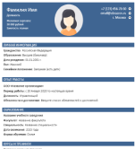

Поступление в бизнес
школу за рубежом
Подготовлю к поступлению за 10 недель
на авторском курсе выпускника Лиги плюща
и сотрудника Уолл стрита.

Подготовлю к поступлению за 10 недель
на авторском курсе выпускника Лиги плюща
и сотрудника Уолл стрита.
Карьерные транзиторы
Международные опытные искатели
Образовательные эмигранты
Руководители и топ-менеджеры
Профессионалы с опытом работы по специальности более 4 лет, в особенности финансистам, аудиторам, консультантам, риск менеджерам, сотрудникам национальных управляющих холдингов, национального банка и государственных служащих.
Эти люди обладают глубокими знаниями и навыками в своей текущей сфере, но ищут новые вызовы и возможности для профессионального роста в других областях.
Консультации по поступлению в престижные университеты мира. Помощь в подготовке полного пакета документов: эссе, рекомендательные письма, заявления о цели (goal statement).
Это текст об преимуществе, информацию нужно предоставить, после мы замени ее на сайте.
Это текст об преимущество, информацию нужно предоставить, после мы замени ее на сайте.
В 2016 году начал работать менеджером юридического отдела в компании "Байтерек Девелопмент".
В 2017 году перешел в компанию "Казына Капитал Менеджмент" на должность старшего юрисконсульта.
В 2019 году был назначен руководителем юридического отдела в компании "Байтерек Венчурный Фонд".
В 2021 году поступил в Корнеллскую бизнес-школу для продолжения образования. После окончания учебы присоединился к инвестиционному банку UBS на должность Associate и в 2024 году был повышен до должности Associate Director в UBS.
Заполните эту форму и мы свяжемся с вами в кратчайшие сроки, чтобы обсудить детали и ответить на все ваши вопросы.
В отличие от других преподавателей , я окончил бизнес-школу Лиги Плюща и нашел работу на Уолл-стрит в США. Это означает, что я досконально знаю все процессы и "подводные камни", связанные с поступлением в школы Лиги Плюща и поиском работы в различных отраслях.
Я, наверное, единственный квалифицированный преподаватель GMAT в Казахстане с доказанными результатами. За 6 лет я решил 50 000+ упражнений, сдавал экзамен шесть раз и изучил все релевантные материалы. Уверен, что могу эффективно преподавать новый формат GMAT Focus.
Преподавание для меня не просто хобби, это часть моего наследия. Мой дедушка был учеником Мухтара Ауэзова, и я являюсь учителем в третьем поколении. Несмотря на работу на Уолл-стрит и высокую заработную плату, моя страсть лежит в преподавании, и я намерен посвятить этому всю свою жизнь в ближайшем будущем.
Работая в приемной комиссии Корнеллской бизнес-школы, я знаю критерии отбора. Я проводил интервью и понимаю, что ищут бизнес-школы. Эти знания позволяют мне помочь вам с эссе, рекомендательными письмами и подготовкой к интервью.
Как член HR-комитета в Инвестиционном банке, я знаю, что ищут работодатели в США. Мои услуги по подготовке выходят за рамки поступления в Лигу Плюща и помогают вам подготовиться к успешной карьере в белых воротничках в США.
За три года преподавания GMAT многие из моих студентов набрали 650+ баллов на экзамене. Несколько из них были приняты в престижные университеты, такие как Оксфордская бизнес-школа Сайд и Московская бизнес-школа.
Более 500 слайдов отборного материала для подготовки к GMAT Focus с подходом Уолл стрита (авторская методика)
Доступ к базе данных более чем к 1,000+ резюме из разных университетов Лиги плюща.
Доступ к базе данных более чем к 1,000+ мотивационным писем из разных университетов Лиги плюща.

Я потратил 5000+ часов на подготовку к GMAT, изучая книги всех издателей, онлайн-видео и форумы. Я освоил разные трюки для быстрого решения задач.
Работая на Уолл-стрит, я научился предоставлять материал ясно. Этот подход я применил к GMAT, создав слайды и видеолекции, которые понятны даже ребенку.
Часто учебники не соответствуют тому, что вы видите на экзамене. Я собрал самое лучшее из всех источников в одно целое, чтобы предоставить вам актуальную и эффективную информацию.
Я записал короткие видеолекции для вашего удобства. Их можно быстро посмотреть в любое свободное время: во время обеда, на работе или перед сном. Вам не придется ставить видео на паузу на долгих лекциях.
Это описание этой услуги, информацию нужно предоставить
Это описание этой услуги, информацию нужно предоставить
Это описание этой услуги, информацию нужно предоставить
Анализ выбора университета
Помощь с резюме
Руководство по рекомендационным письмам
Создание заявления о цели
Поддержка в написании эссе
Поддержка при подаче заявлений
Все книги и ресурсы, которые помогут поступить
Полное мое сопровождение и подготовка к университетам
Я записал короткие видеолекции для вашего удобства, чтобы вы могли легко их просматривать в свободное время, например, во время обеда, на работе или перед сном. Теперь вам не нужно вспоминать, на какой минуте вы остановились.